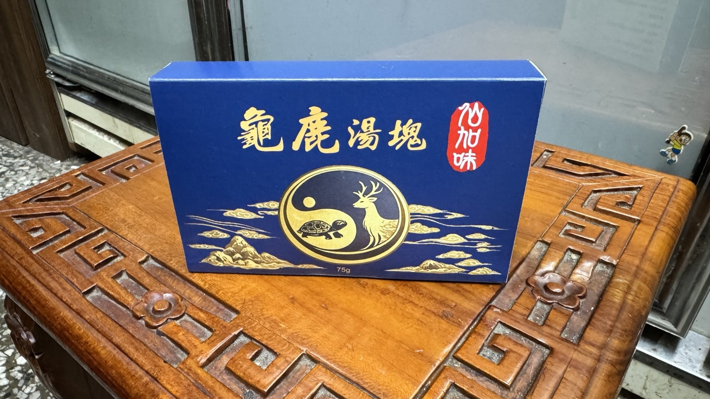

規格
75g／盒｜8塊｜每塊約9.375g

直接回答
75g／盒｜8塊｜每塊約9.375g
鹿角萃取物、龜板萃取物
想小盒裝、方便沖泡、保溫壺或燉湯料理的人
使用方式
保存方式
比較重點
兩者同為鹿角萃取物與龜板萃取物的龜鹿基底；湯塊是75g小盒裝，龜鹿膠是600g一斤裝。差異主要在份量、包裝與使用安排。
常見問題
先看規格、使用方式與保存；價格與活動請由官方 LINE 確認。
可加入約300～500mL熱水沖泡，並依個人口味調整。
可以，加入熱水後悶泡；也可加入雞湯、排骨湯等家常湯品。
可常溫置於陰涼處，或保存於5°C以下冷藏。
資料更新：2026-07-08